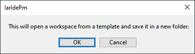

This guide is intended to assist users in the initial setup and demonstration of running their first MSPM0 application with IAR. This guide is not intended to explain the functionality of IAR. Please refer to the IAR documentation or the IAR IDE Guide for MSPM0 MCUs included with the MSPM0 SDK documentation.
The TI XDS drivers are required when using the MSPM0 Launchpad’s integrated XDS-110 programmer. For more information, please visit the release notes for IAR C-SPY XDS driver.
Download and install the latest MSPM0 SDK. Note that there are SDK installers for Windows, Linux and MacOS. The steps below are shown in Windows, but a similar approach should be followed in Linux or MacOS.
Execute the installer. Click Next.
Select an Installation Directory and click Next. Note the installation directory which by default is c:\ti which will install the SDK at C:\ti\mspm0_sdk_<version>\. This path will be referred to as <MSPM0_SDK_INSTALL_DIR> in sections below.
The SDK includes a preliminary version of SysConfig metadata which can be used to evaluate the user experience of MSPM0 SDK.
For more general information about using SysConfig with MSPM0, please refer to Using SysConfig with MSPM0 available in the SDK’s Tools Guide.
Download and install the standalone version (1.20.x) of SysConfig from ti.com
In IAR, select Tools → Configure Viewers from the menu.
Click Import
Navigate to your SDK folder into <MSPM0_SDK_INSTALL_DIR>/tools/iar/ and open sysconfig_iar_setup.xml.
The standalone SysConfig will be associated to .syscfg files.
Click OK to close window.
Double-check that the SYSCONFIG_ROOT Custom Argument Variable is correctly pointing to the SysConfig folder as described in Section 4. Add MSPM0 SDK to IAR.
In IAR, select File → Open Workspace from the menu.
Navigate to an IAR folder in SDK example at <MSPM0_SDK_INSTALL_DIR>/examples/ and open the .eww workspace file. For example <MSPM0_SDK_INSTALL_DIR>/examples/nortos/LP_MSPM0L1306/driverlib/gpio_toggle_output/iar/gpio_toggle_output_LP_MSPM0L1306_nortos_iar.template.eww.
Click OK on the message.

Select a folder to install the example.
To build the example, right click in the project and select Make. Note that SysConfig projects will automatically generate files in the “SysConfig Generated Files” folder.
Note: Some examples include support for SysConfig to allow for an easier device configuration.